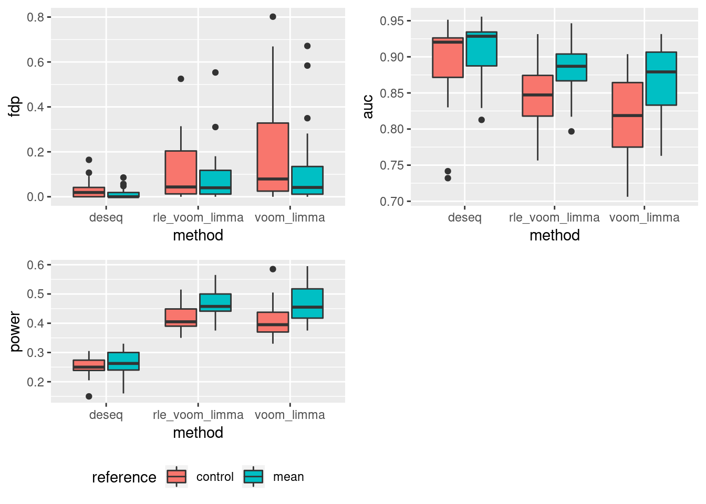
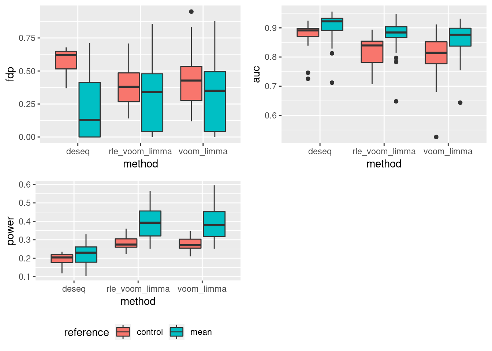
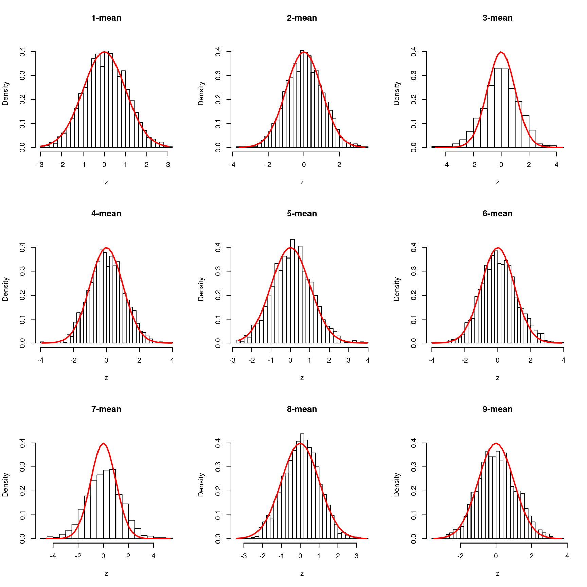
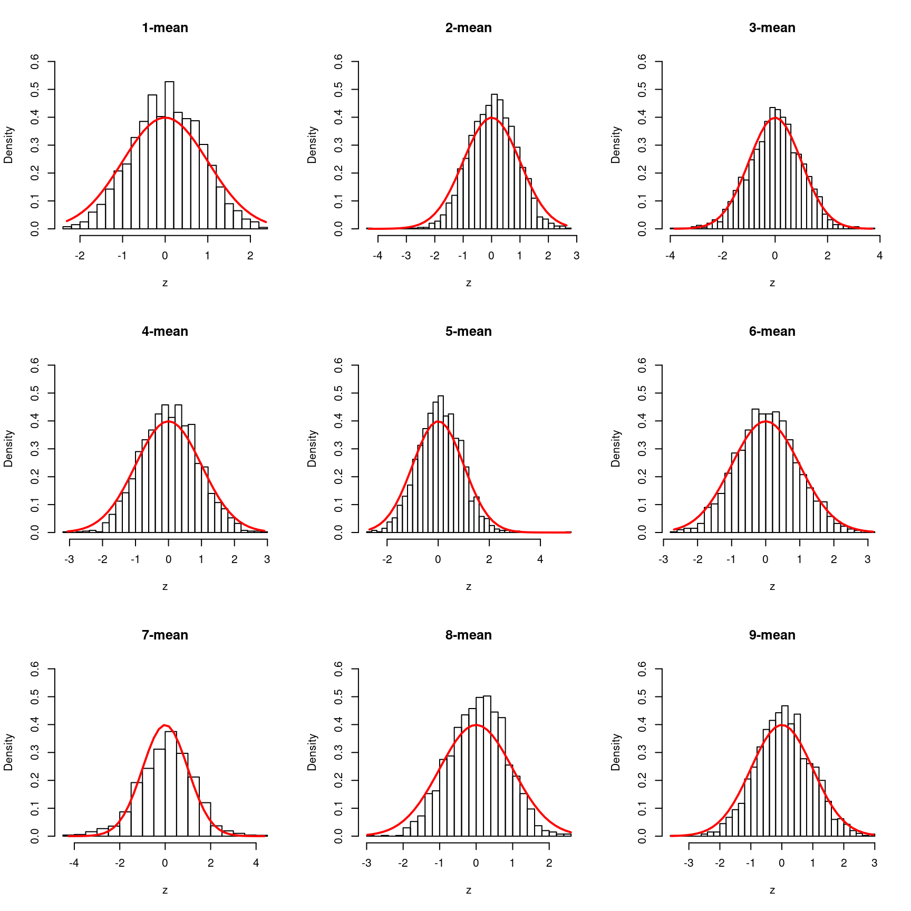
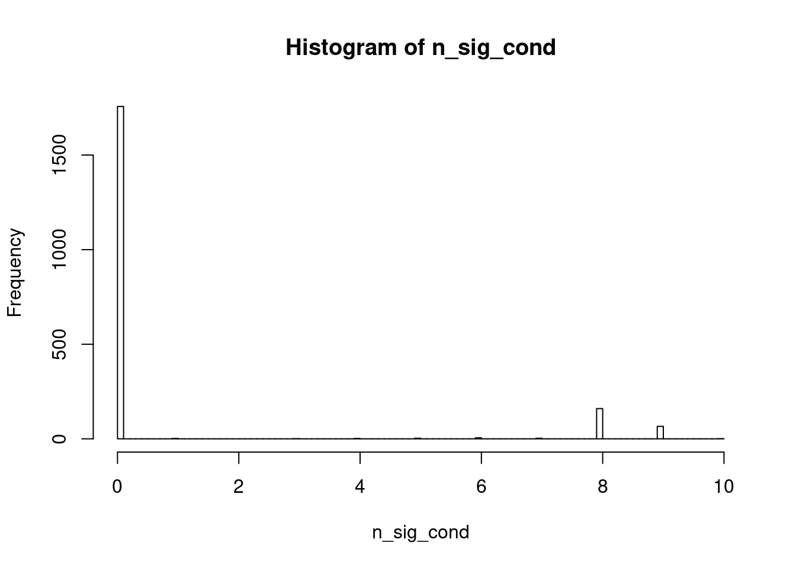
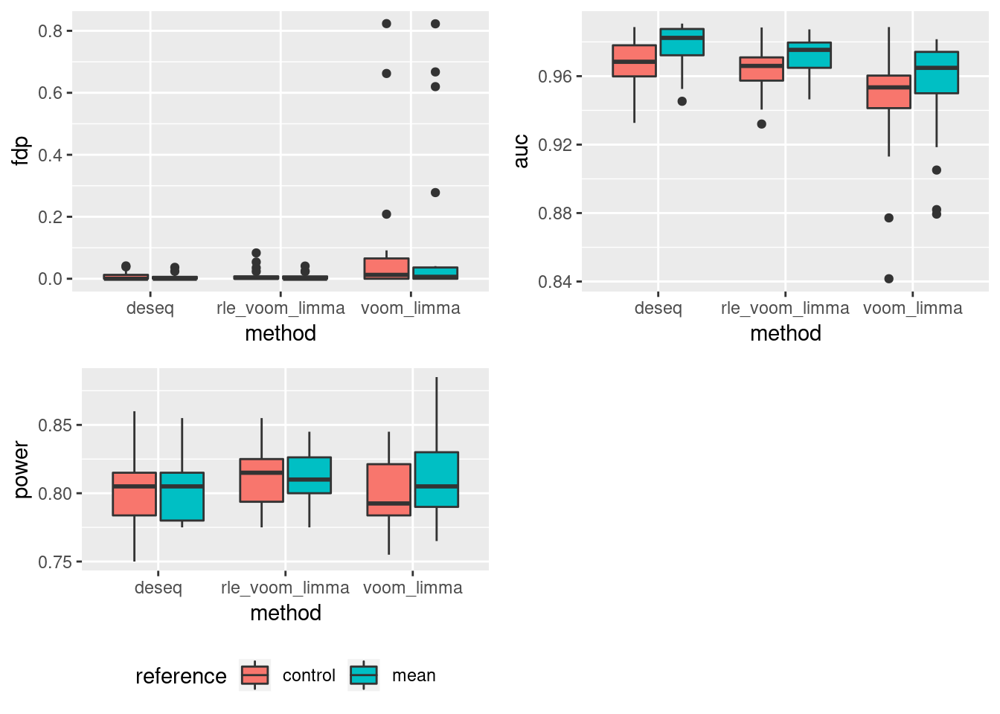
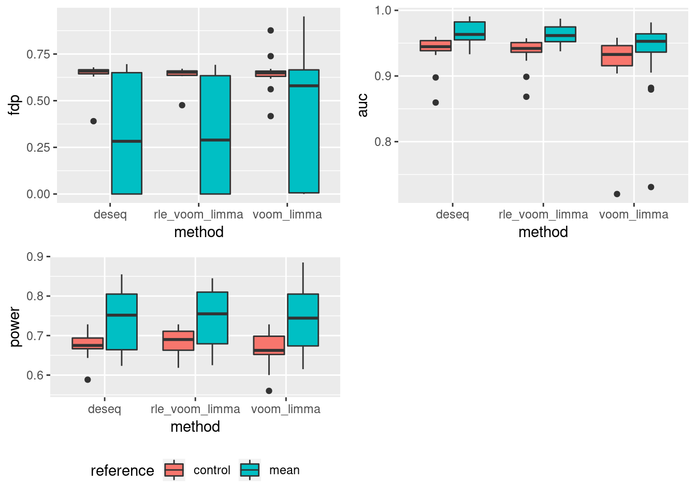

Last updated: 2020-07-07
Checks: 7 0
Knit directory: dear/
This reproducible R Markdown analysis was created with workflowr (version 1.6.0). The Checks tab describes the reproducibility checks that were applied when the results were created. The Past versions tab lists the development history.
Great! Since the R Markdown file has been committed to the Git repository, you know the exact version of the code that produced these results.
Great job! The global environment was empty. Objects defined in the global environment can affect the analysis in your R Markdown file in unknown ways. For reproduciblity it’s best to always run the code in an empty environment.
The command set.seed(20200403) was run prior to running the code in the R Markdown file. Setting a seed ensures that any results that rely on randomness, e.g. subsampling or permutations, are reproducible.
Great job! Recording the operating system, R version, and package versions is critical for reproducibility.
Nice! There were no cached chunks for this analysis, so you can be confident that you successfully produced the results during this run.
Great job! Using relative paths to the files within your workflowr project makes it easier to run your code on other machines.
Great! You are using Git for version control. Tracking code development and connecting the code version to the results is critical for reproducibility. The version displayed above was the version of the Git repository at the time these results were generated.
Note that you need to be careful to ensure that all relevant files for the analysis have been committed to Git prior to generating the results (you can use wflow_publish or wflow_git_commit). workflowr only checks the R Markdown file, but you know if there are other scripts or data files that it depends on. Below is the status of the Git repository when the results were generated:
Ignored files:
Ignored: .Rhistory
Ignored: .Rproj.user/
Untracked files:
Untracked: analysis/lash_real_data.Rmd
Untracked: analysis/log_ratio_approx.Rmd
Untracked: analysis/plnruv.Rmd
Untracked: analysis/scMash.Rmd
Untracked: code/bulkMash_simu_new.R
Untracked: data/BR_log_cpm.RDS
Untracked: data/bulk_cytokin_SI.RData
Untracked: data/cytokine_cd4.RData
Untracked: data/filtered_gene_bc_matrices/
Untracked: data/pbmc3k_cellType.RData
Untracked: data/pbmc3k_filtered_gene_bc_matrices.tar.gz
Untracked: output/compare_lm_sample.RData
Untracked: output/cytokine_null_simu_cd4_r250_yusha.RData
Untracked: output/lm_cytokine_Nonnull_simu_cd4.RData
Untracked: output/lm_cytokine_Nonnull_simu_cd4_2trteffect.RData
Untracked: output/lm_cytokine_Nonnull_simu_cd4_2trteffect_sizesd001.RData
Untracked: output/lm_cytokine_Nonnull_simu_cd4_2trteffect_sizesd005.RData
Untracked: output/lm_cytokine_Nonnull_simu_cd4_2trteffect_sizesd01.RData
Untracked: output/lm_cytokine_Nonnull_simu_cd4_2trteffect_sizesd4.RData
Untracked: output/lm_cytokine_null_simu_cd4.RData
Untracked: output/slm_cytokine_null_simu_cd4.RData
Unstaged changes:
Modified: analysis/bulkMash_simu_no_dataDriven_cov.Rmd
Modified: code/pln_simu_summary.R
Modified: code/scMash2.R
Note that any generated files, e.g. HTML, png, CSS, etc., are not included in this status report because it is ok for generated content to have uncommitted changes.
These are the previous versions of the R Markdown and HTML files. If you’ve configured a remote Git repository (see ?wflow_git_remote), click on the hyperlinks in the table below to view them.
| File | Version | Author | Date | Message |
|---|---|---|---|---|
| Rmd | e8c6692 | DongyueXie | 2020-07-07 | wflow_publish(“analysis/bulkMash_simu.Rmd”) |
| html | 945daf7 | DongyueXie | 2020-07-06 | Build site. |
| Rmd | 8294344 | DongyueXie | 2020-07-06 | wflow_publish(“analysis/bulkMash_simu.Rmd”) |
| html | 457103e | DongyueXie | 2020-07-02 | Build site. |
| Rmd | baaaedc | DongyueXie | 2020-07-02 | wflow_publish(“analysis/bulkMash_simu.Rmd”) |
| html | 625f7dc | DongyueXie | 2020-06-30 | Build site. |
| Rmd | f2d9a54 | DongyueXie | 2020-06-30 | wflow_publish(“analysis/bulkMash_simu.Rmd”) |
| html | b0cddfc | DongyueXie | 2020-06-30 | Build site. |
| Rmd | b538896 | DongyueXie | 2020-06-30 | wflow_publish(“analysis/bulkMash_simu.Rmd”) |
methods:
deseq
edgeR: likelihood ratio test
Design:
NUll: each simulation, draw 2000 genes and 30 samples, randomly assign 30 samples to 10 groups with 3 replicates in each group.
Signal: generate thinning coefficients from \(N(0,0.8^2)\), randomly select \(0.1\) genes to be non-NULL and for non-null genes, \(3\) groups are selected to be non-null. Apply thinning to null matrix.
Evaluation:
Is there a ROC-like plot for fdr vs tpr?
library(mashr)Loading required package: ashrsource('code/pln_simu_summary.R')load('/scratch/midway2/dyxie/sc-cytokine/output/bulkMash_3rep.RData')
summary_pln_simu(simu_all)NULL case: compare with control and mean
Looking at null_simu_control
| voom_limma | rle_voom_limma | deseq |
|---|---|---|
| 2 | 5 | 0 |
| 0 | 1 | 0 |
| 1 | 1 | 0 |
| 42 | 3 | 1 |
| 0 | 1 | 0 |
| 5 | 5 | 0 |
| 0 | 0 | 0 |
| 631 | 75 | 3 |
| 226 | 39 | 13 |
| 2 | 0 | 0 |
| 125 | 185 | 54 |
| 2 | 8 | 0 |
| 0 | 1 | 0 |
| 0 | 0 | 0 |
| 1 | 95 | 0 |
| 75 | 64 | 10 |
| 106 | 99 | 6 |
| 6 | 4 | 1 |
| 20 | 27 | 1 |
| 4 | 40 | 1 |
Looking at null_simu_mean
| voom_limma | rle_voom_limma | deseq |
|---|---|---|
| 1 | 24 | 0 |
| 21 | 1 | 0 |
| 0 | 1 | 0 |
| 340 | 12 | 0 |
| 0 | 0 | 0 |
| 11 | 19 | 0 |
| 3 | 0 | 0 |
| 649 | 55 | 3 |
| 234 | 243 | 65 |
| 25 | 0 | 0 |
| 111 | 170 | 48 |
| 2 | 52 | 0 |
| 0 | 0 | 0 |
| 0 | 0 | 0 |
| 0 | 101 | 0 |
| 37 | 25 | 4 |
| 89 | 95 | 3 |
| 33 | 22 | 2 |
| 18 | 32 | 0 |
| 31 | 37 | 1 |
Identifying significant genesIdentifying significant conditions
Let’s look at plots of \(z\) scores since voom-limma has a number of false discoveries. Compare rle-voom-limma and deseq
Bhat = simu_all$null_simu_mean$rle_voom_limma[[9]]$mash$input$Bhat
Shat = simu_all$null_simu_mean$rle_voom_limma[[9]]$mash$input$Shat
data = mash_set_data(Bhat,Shat)
data.L = mash_update_data(data,ref='mean')
titles = colnames(data.L$Bhat)
par(mfrow=c(3,3))
for(i in 1:length(titles)){
z = data.L$Bhat[,i]/data.L$Shat[,i]
hist(z,breaks = 30,xlab='z', main=titles[i],freq = FALSE,ylim = c(0,0.45))
xfit<-seq(min(z),max(z),length=40)
yfit<-dnorm(xfit,mean=0,sd=1)
lines(xfit, yfit, col="red", lwd=2)
}
| Version | Author | Date |
|---|---|---|
| b0cddfc | DongyueXie | 2020-06-30 |
Bhat = simu_all$null_simu_mean$deseq[[9]]$mash$input$Bhat
Shat = simu_all$null_simu_mean$deseq[[9]]$mash$input$Shat
data = mash_set_data(Bhat,Shat)
data.L = mash_update_data(data,ref='mean')
titles = colnames(data.L$Bhat)
par(mfrow=c(3,3))
for(i in 1:length(titles)){
z = data.L$Bhat[,i]/data.L$Shat[,i]
hist(z,breaks = 30,xlab='z', main=titles[i],freq = FALSE,ylim = c(0,0.6))
xfit<-seq(min(z),max(z),length=40)
yfit<-dnorm(xfit,mean=0,sd=1)
lines(xfit, yfit, col="red", lwd=2)
}
| Version | Author | Date |
|---|---|---|
| b0cddfc | DongyueXie | 2020-06-30 |
n_sig_cond = as.numeric(get_n_significant_conditions(simu_all$null_simu_mean$rle_voom_limma[[9]]$mash))
par(mfrow=c(1,1))
hist(n_sig_cond,breaks=100)
| Version | Author | Date |
|---|---|---|
| b0cddfc | DongyueXie | 2020-06-30 |
either none or most of conditions are significant….
Bhat = simu_all$null_simu_mean$rle_voom_limma[[9]]$mash$input$Bhat
Shat = simu_all$null_simu_mean$rle_voom_limma[[9]]$mash$input$Shat
data = mash_set_data(Bhat,Shat)
data.L = mash_update_data(data,ref='mean')
data.L$Bhat[1484,] 1-mean 2-mean 3-mean 4-mean 5-mean 6-mean
0.22192819 0.16275459 -0.45988753 0.24222562 -0.09479704 0.26680613
7-mean 8-mean 9-mean
-0.64613312 0.09251086 0.18754422 data.L$Shat[1484,] 1-mean 2-mean 3-mean 4-mean 5-mean 6-mean 7-mean
0.1372138 0.1362131 0.1411604 0.1356561 0.1426471 0.1367904 0.1442832
8-mean 9-mean
0.1385865 0.1357481 simu_all$null_simu_mean$rle_voom_limma[[9]]$mash$result$lfsr[1484,] 1-mean 2-mean 3-mean 4-mean 5-mean
1.002285e-02 3.679494e-07 9.219987e-08 9.175160e-08 9.797120e-08
6-mean 7-mean 8-mean 9-mean 10-mean
1.315189e-07 9.199837e-08 3.386752e-01 9.901908e-08 1.107432e-06 The results are weried. Look at large Shat compared to Bhat but small lfsr.
Let’s run this specific see what happened.
U.c = cov_canonical(data.L)
m.1by1 = mash_1by1(data.L)
strong = get_significant_results(m.1by1)
length(strong)[1] 69U.pca = cov_pca(data.L,2,subset=strong)
U.ed = cov_ed(data.L, U.pca, subset=strong)
m = mash(data.L, c(U.c,U.ed), algorithm.version = 'Rcpp',verbose = F)
length(get_significant_results(m))[1] 243m$loglik[1] 395.783So ash 1by1 identifies 69 significant genes while mash finds 243. How about just use canonical matrix?
m = mash(data.L, c(U.c), algorithm.version = 'Rcpp',verbose = F)
length(get_significant_results(m))[1] 12m$loglik[1] -472.4913Only 12! The prior covariance matrix has such huge influence on the results!!
load('/scratch/midway2/dyxie/sc-cytokine/output/bulkMash_10rep.RData')
summary_pln_simu(simu_all)NULL case: compare with control and mean
Looking at null_simu_control
| voom_limma | rle_voom_limma | deseq |
|---|---|---|
| 85 | 1 | 0 |
| 0 | 0 | 0 |
| 1 | 0 | 0 |
| 0 | 0 | 0 |
| 6 | 4 | 0 |
| 0 | 0 | 0 |
| 358 | 52 | 0 |
| 4 | 2 | 1 |
| 5 | 0 | 0 |
| 0 | 0 | 0 |
| 2 | 1 | 1 |
| 113 | 89 | 0 |
| 0 | 0 | 0 |
| 1 | 1 | 3 |
| 101 | 60 | 41 |
| 0 | 0 | 1 |
| 0 | 0 | 1 |
| 1 | 0 | 0 |
| 17 | 34 | 14 |
| 654 | 0 | 0 |
Looking at null_simu_mean
| voom_limma | rle_voom_limma | deseq |
|---|---|---|
| 100 | 0 | 0 |
| 0 | 0 | 0 |
| 0 | 0 | 0 |
| 0 | 0 | 0 |
| 13 | 11 | 1 |
| 0 | 0 | 0 |
| 217 | 3 | 2 |
| 44 | 2 | 1 |
| 173 | 0 | 0 |
| 0 | 0 | 0 |
| 0 | 0 | 1 |
| 76 | 69 | 0 |
| 0 | 0 | 0 |
| 3 | 0 | 0 |
| 148 | 66 | 47 |
| 0 | 0 | 1 |
| 0 | 0 | 0 |
| 0 | 0 | 0 |
| 0 | 21 | 11 |
| 685 | 0 | 0 |
Identifying significant genesIdentifying significant conditions
sessionInfo()R version 3.5.1 (2018-07-02)
Platform: x86_64-pc-linux-gnu (64-bit)
Running under: Scientific Linux 7.4 (Nitrogen)
Matrix products: default
BLAS/LAPACK: /software/openblas-0.2.19-el7-x86_64/lib/libopenblas_haswellp-r0.2.19.so
locale:
[1] C
attached base packages:
[1] stats graphics grDevices utils datasets methods base
other attached packages:
[1] ggplot2_3.1.1 mashr_0.2.21 ashr_2.2-39
loaded via a namespace (and not attached):
[1] tidyselect_0.2.5 purrr_0.3.2 lattice_0.20-38
[4] colorspace_1.3-2 htmltools_0.3.6 yaml_2.2.0
[7] rlang_0.4.0 mixsqp_0.3-43 later_0.7.5
[10] pillar_1.3.1 glue_1.3.0 withr_2.1.2
[13] foreach_1.4.4 plyr_1.8.4 stringr_1.3.1
[16] munsell_0.5.0 gtable_0.2.0 workflowr_1.6.0
[19] mvtnorm_1.0-8 codetools_0.2-15 evaluate_0.12
[22] labeling_0.3 knitr_1.20 pscl_1.5.2
[25] doParallel_1.0.14 httpuv_1.4.5 irlba_2.3.3
[28] parallel_3.5.1 highr_0.7 Rcpp_1.0.4.6
[31] promises_1.0.1 backports_1.1.2 scales_1.0.0
[34] rmeta_3.0 truncnorm_1.0-8 abind_1.4-5
[37] fs_1.3.1 gridExtra_2.3 digest_0.6.18
[40] stringi_1.2.4 dplyr_0.8.0.1 grid_3.5.1
[43] rprojroot_1.3-2 tools_3.5.1 magrittr_1.5
[46] lazyeval_0.2.1 tibble_2.1.1 crayon_1.3.4
[49] whisker_0.3-2 pkgconfig_2.0.2 MASS_7.3-51.1
[52] Matrix_1.2-15 SQUAREM_2017.10-1 pROC_1.13.0
[55] assertthat_0.2.0 rmarkdown_1.10 iterators_1.0.10
[58] R6_2.3.0 git2r_0.26.1 compiler_3.5.1